Bringing support inside a real estate management platform, so agents and property managers get help the moment they need it, without leaving their work.
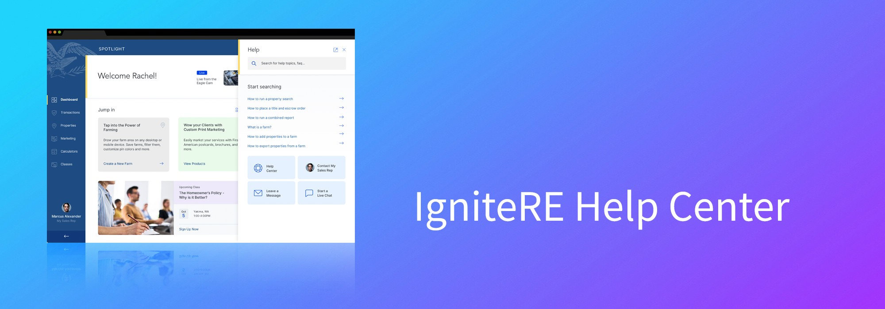
IgniteRE is a dynamic real estate management platform used by real estate agents and property managers to streamline their daily tasks. As the platform grew in complexity and features, users began to experience friction when they needed support. They often struggled to find timely assistance, which led to frustration and lower satisfaction.
To address these pain points, we designed and integrated a Help Center and Chat Support directly inside the IgniteRE application, improving the overall user experience.
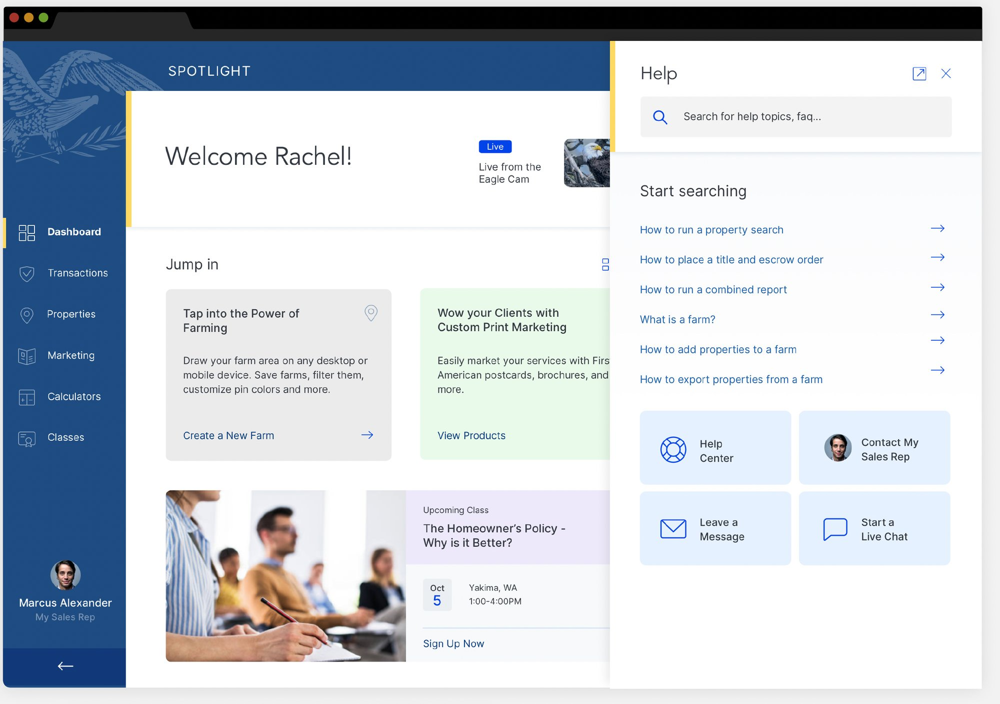
UX/UI Design: Help Center & Chat Support experience
Figma
IgniteRE web application (in-app help panel)
Real estate agents and property managers
The first step was understanding what support felt like for IgniteRE's users as the platform grew.
Rely on IgniteRE for: streamlining daily tasks across a growing feature set.
Need from support: quick, in-context answers without leaving their work.
Rely on IgniteRE for: managing properties and day-to-day workflows.
Need from support: timely help for urgent problems, and self-serve guidance for common how-tos.
The existing support system was external and often time-consuming to reach.
Traditional ticketing meant long waits, hurting users who needed urgent help.
Similar feature questions created repetitive requests and more work for support.
As features were added, users hit more friction and struggled to find timely help.
This journey is based only on the pain points above.
| # | Challenge | Objective | Design solution |
|---|---|---|---|
| 1 | Difficulty finding support resources. The support system was external and time-consuming to access | Improve accessibility to support. Make help resources easy to reach within the app | In-app Help panel plus a persistent chat widget in the same place on every page |
| 2 | Slow resolution times. Ticketing caused long waits for urgent issues | Reduce resolution time. Give users faster, more efficient support | Chatbot first response with a live-agent handoff that keeps the user's context |
| 3 | High volume of repetitive inquiries. Similar feature questions overloaded the support team | Enhance self-service. Let users solve common problems on their own with minimal effort | Searchable knowledge base with categories and step-by-step guides with visuals |
| – | Support features could disrupt the existing UI | Deliver a seamless experience. Integrate support without disrupting the app's interface and flow | Panel that matches the app's look, feel and branding: unobtrusive but always available |
Make help content easy to find, organized and actionable.
Focus on ease of use, accessibility and efficiency.
Help content was organized into categories that match the areas of the product users already know.
flowchart LR
H["❓ Help panel
(search + suggested topics)"] --> HC["📚 Help Center"]
H --> SR["👤 Contact My Sales Rep"]
H --> LM["✉️ Leave a Message"]
H --> LC["💬 Start a Live Chat"]
HC --> D["Dashboard"]
HC --> O["Orders"]
HC --> P["Properties"]
HC --> M["Marketing"]
HC --> C["Calculators"]
HC --> E["FirstAM EDU"]
P --> P1["How to run a property search"]
P --> P2["How to place a title and escrow order"]
P --> P3["How to run a combined report"]
P --> P4["What is a farm?"]
P --> P5["How to add / export properties from a farm"]
Categories and sample articles are taken from the project wireframes. The core categories in the brief were Dashboard, Orders, Properties and Marketing.
flowchart TD
A(["User is working on any IgniteRE page"]) --> B["Opens the persistent Help / Chat widget"]
B --> C{"How do they want help?"}
C -->|Search| D["Types keywords → predictive results"]
D --> E["Opens a step-by-step article
with screenshots, GIFs or video"]
E --> F{"Was this helpful?"}
F -->|Yes| Z(["✅ Resolved on their own"])
F -->|No| G["Shares feedback → similar articles
or starts a chat"]
C -->|Chat| H["🤖 Chatbot answers the FAQ
or suggests articles"]
G --> H
H --> I{"Resolved?"}
I -->|Yes| R["⭐ User rates the experience"]
I -->|No| J["🧑💼 Smooth handoff to a live agent"]
J --> K["Context passed along:
previous interactions + issue details"]
K --> L["Agent resolves the issue"]
L --> R
C -->|Prefer async| M["✉️ Leave a Message
topic, reason, attachment, contact preference"]
R --> Z2(["✅ Resolved, and feedback feeds improvements"])
A side panel opens next to the current screen. It can be docked or undocked into its own window.
The chat/help icon sits in the same location across the app.
Search and suggested topics come first; four routes are always visible: Help Center · Contact My Sales Rep · Leave a Message · Start a Live Chat.
Articles combine step-by-step text with screenshots, GIFs and video.
Look and feel match the app's existing design and branding.
Low-fidelity wireframes in Figma mapped every state of the help experience before any visual design.
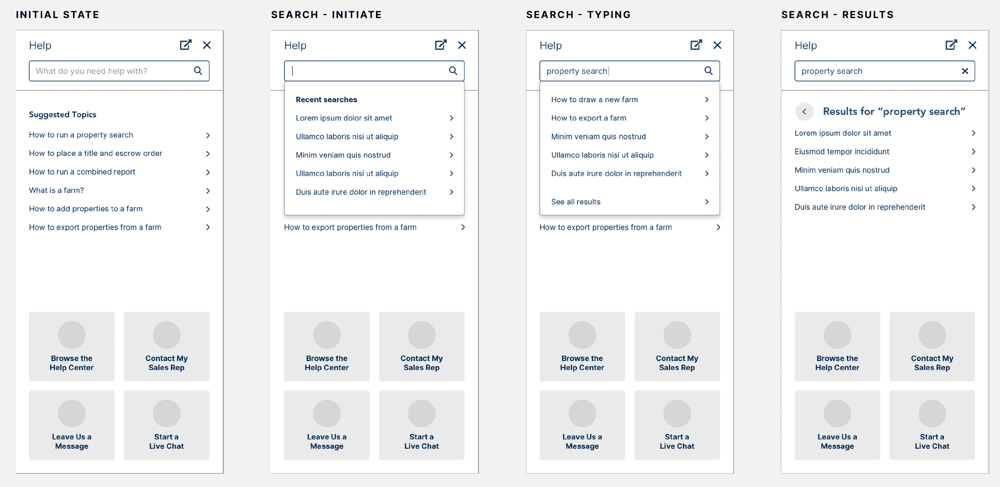
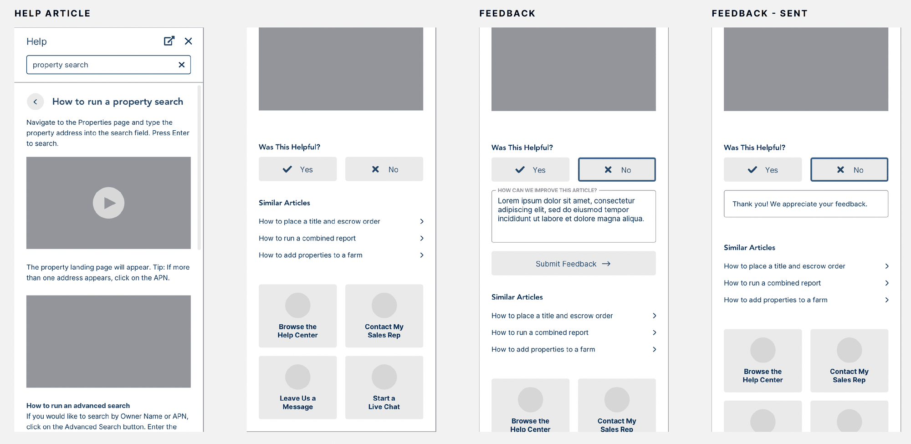
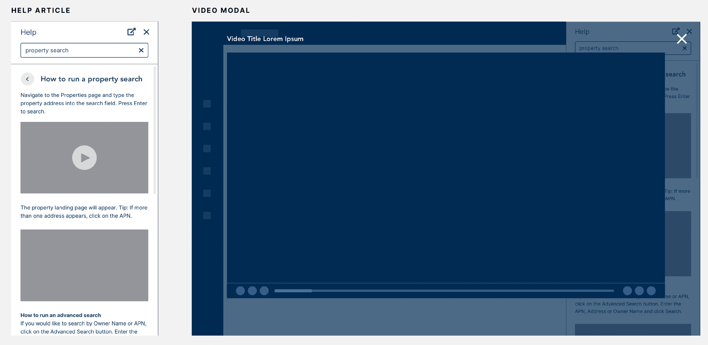
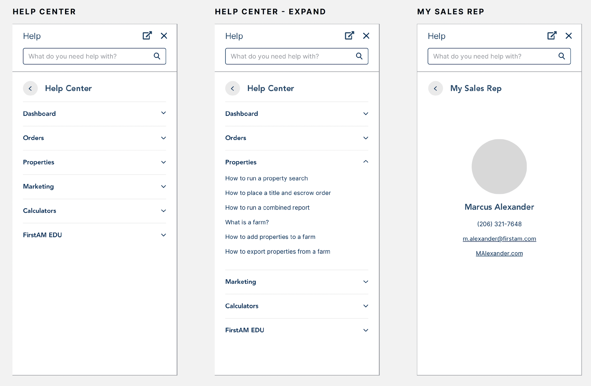
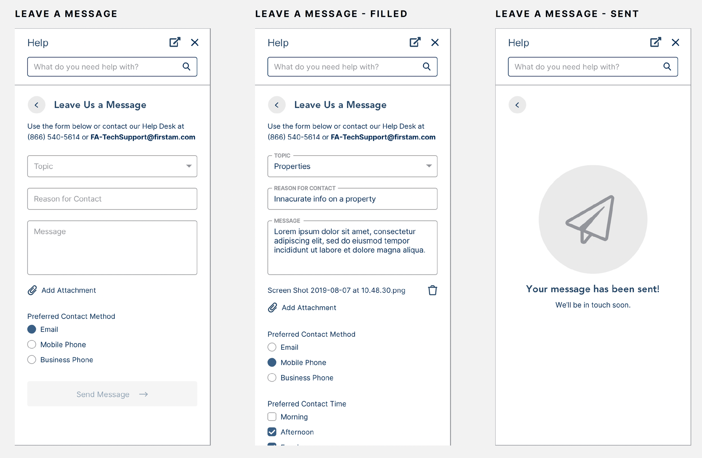
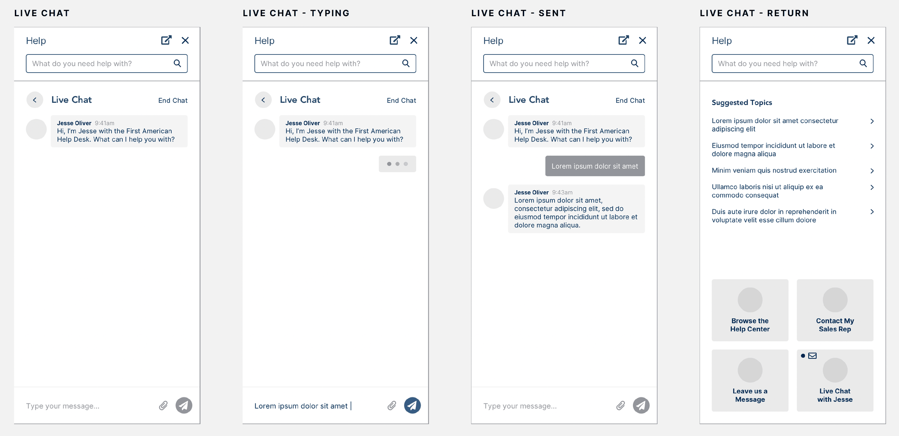
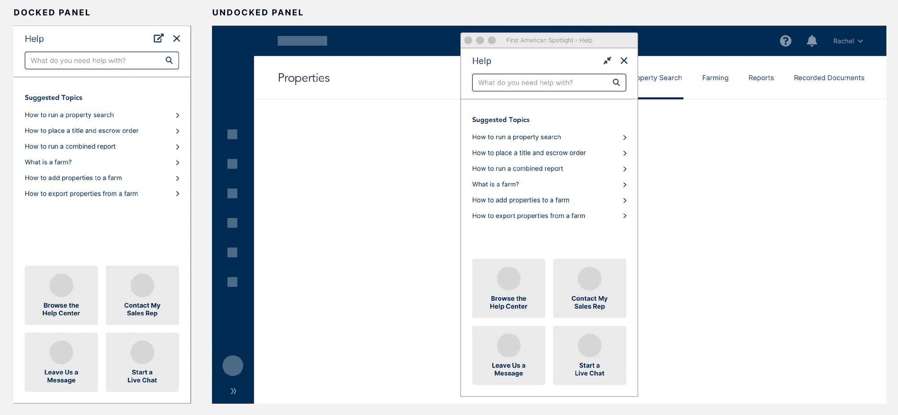
The wireframes then became polished, on-brand screens. Key details: a soft accent edge marking the panel, clear iconography for the four support routes, and generous spacing for readability.
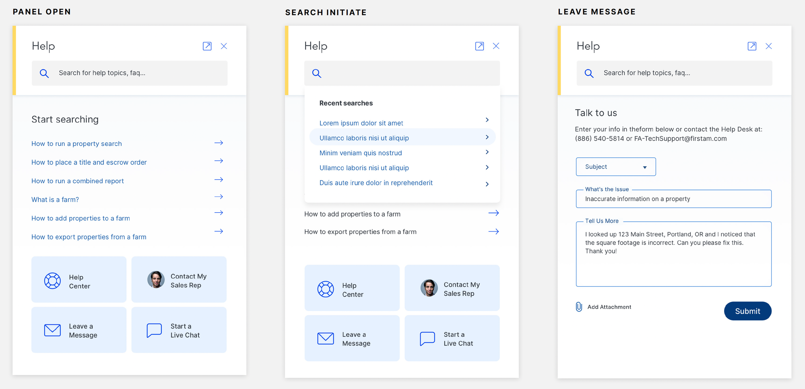
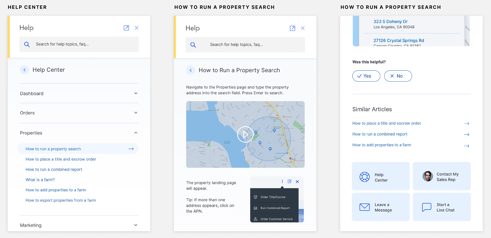
| Feature | What it does | Objective it serves |
|---|---|---|
| 🔍 Searchable knowledge base | Keyword search with predictive results and query-based articles | Self-service, accessibility |
| 🗂️ Categorized content | Dashboard, Orders, Properties, Marketing (plus more) for easy browsing | Self-service |
| 🪜 Step-by-step guides | Detailed instructions with screenshots, GIFs and videos | Self-service |
| 💬 Persistent chat widget | Same location everywhere; start a conversation without leaving the page | Accessibility, seamless experience |
| 🤖 Chatbot assistance | Answers FAQs or links to relevant Help Center articles | Faster resolution, fewer repetitive inquiries |
| 🧑💼 Live-agent handoff | Seamless escalation with prior interactions and issue details passed along | Faster resolution |
| ⭐ Real-time feedback | Users rate the support experience and articles | Continuous improvement |
| 🧩 Seamless integration | Matches IgniteRE's look, feel and branding; unobtrusive but always available | Seamless experience |
Reused IgniteRE's existing visual language and branding, so support feels like part of the product rather than a bolt-on.
Header (title, undock, close) → search → content → persistent support shortcuts, the same in every state.
List rows with chevrons, accordion categories, floating-label fields, Yes/No feedback buttons and quick-action tiles.
flowchart TB
subgraph PRE["Pre-launch"]
direction LR
A["Design"] --> B["Usability testing
with real users"] --> C["Insights"] --> D["Refine chatbot flow"]
end
subgraph POST["Post-launch"]
direction LR
E["Launch"] --> F["In-app surveys +
behavior analytics"] --> G["Ongoing improvements"]
G -- feedback loop --> F
end
PRE --> POST
Ran several rounds of usability testing with real users, observing how they used both the Help Center and Chat Support.
✅ Users liked how simple and efficient the Help Center search was.
🔧 We adjusted the chatbot's flow to handle more nuanced queries.
Kept collecting feedback through in-app surveys and user behavior analytics.
Made ongoing improvements to refine the experience and make sure users got the most value from the new features.
Chat Support led to a 50% reduction in response times, with many users now getting immediate answers from the chatbot or a live agent.
30% of users resolved their issues independently, which reduced the load on live support agents and raised overall satisfaction.
Users reported feeling more confident in the app, with 40% saying they now feel more empowered to solve problems on their own.
Always-available support led to a 20% increase in user engagement, with users spending more time in the app knowing help was a click away.
User satisfaction scores rose 25%, especially for the clarity and usefulness of Help Center articles and the responsiveness of live chat.
Integrating the Help Center and Chat Support significantly improved the experience for IgniteRE users. Quick access to helpful resources and real-time support reduced frustration, improved task completion times and increased user satisfaction.
Suvarna Myneni, AI-Native UX Designer · 8+ years · Hyderabad, India